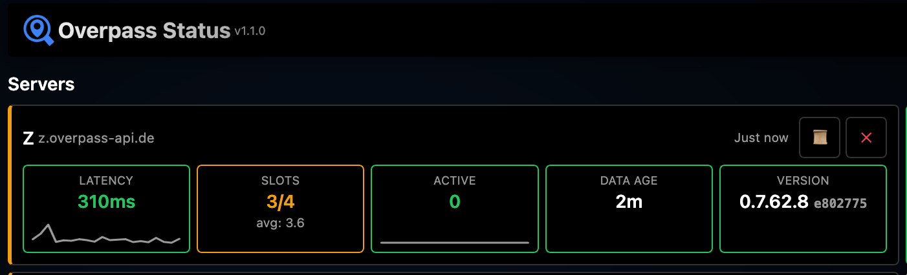
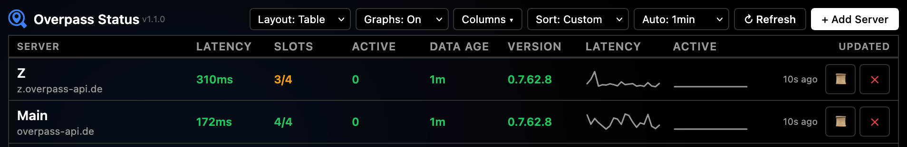

Overpass Status Monitor
Monitor the health and performance of Overpass API servers in real-time.
Overview
Overpass API Status Monitor is a client-side tool for monitoring Overpass API servers. It tracks server health, query performance, and data freshness without requiring any backend.
All data is stored in your browser's localStorage and persists across page reloads.
Adding Servers
Click Add Server to add servers to monitor. You can:
- Select from preset public servers (Main, Z, LZ4, Kumi, Coffee, Japan, Swiss)
- Add a custom server by entering its URL
- Add all preset servers at once
Server URLs should point to the Overpass API endpoint (e.g., https://overpass-api.de).
Layouts
Card View
Detailed view showing all metrics for each server in a card format. Best for monitoring a small number of servers.
Table View
Compact view with servers in rows. Hides the header, landmarks section, and API log for focused monitoring. Best for many servers.
Use the Columns dropdown to show/hide specific metrics.
Latency
Round-trip time to fetch the server's status endpoint (/api/status). Measured in milliseconds.
| Status | Threshold |
|---|---|
| Green | < 500ms |
| Orange | 500ms - 1000ms |
| Red | > 1000ms |
Query Slots
Available query slots on the server. Each Overpass query uses one slot. When all slots are in use, new queries are queued.
| Status | Condition |
|---|---|
| Green | Slots available |
| Orange | 1-2 slots remaining |
| Red | No slots available |
Active Queries
Number of queries currently running on the server. High numbers indicate heavy server load.
| Status | Threshold |
|---|---|
| Green | < 5 queries |
| Orange | 5 - 10 queries |
| Red | > 10 queries |
Data Age
How old the OpenStreetMap data is on the server. Based on the timestamp_osm_base value from the status endpoint.
| Status | Threshold |
|---|---|
| Green | < 30 minutes |
| Orange | 30 min - 24 hours |
| Red | > 24 hours |
Version
The Overpass API software version running on the server.
| Status | Condition |
|---|---|
| Green | Latest version among monitored servers |
| Orange | Behind latest version |
Card view shows the short git commit hash and time since last version upgrade.
Color Coding
Each metric uses color to indicate status:
- Green — Healthy, no issues
- Orange — Warning, monitor closely
- Red — Issue detected, may affect queries
In card view, the left border color reflects the worst status among all metrics.
Sparkline Graphs
Enable graphs via Graphs: On dropdown. Sparklines appear for:
- Latency history
- Query slots history
- Active queries history
- Data age history
Hover over any graph to see a larger popup with:
- Y-axis scale (ms/seconds for latency, count for others, adaptive units for data age)
- X-axis timestamps (oldest to newest)
History stores the last 100 data points per server. Sparklines display the most recent 20 points. Data persists across page reloads.
Landmark Tests
Test server response by querying for famous landmarks around the world:
- Eiffel Tower (Paris)
- Statue of Liberty (New York)
- Sydney Opera House
- Christ the Redeemer (Rio)
- Table Mountain (Cape Town)
- Tokyo Tower
- Taj Mahal (Agra)
- Big Ben (London)
- Great Wall (Beijing)
- Burj Khalifa (Dubai)
Click Run Tests to query all servers, or click a landmark card to test just that location.
Custom Ordering
In card view, drag and drop server cards to reorder them. Your custom order is saved and persists across reloads.
Use the Sort dropdown to sort by:
- Custom — Your drag-and-drop order
- Name — Alphabetical
- Latency — Fastest first
- Version — Newest version first
Sharing Configuration
In the About modal, copy your configuration URL to share your setup with others. The URL includes:
- Server list
- Layout preference
- Sort order
- Refresh interval
- Graph visibility
- Theme
Export/Import
In the About modal:
- Export Config — Download a JSON file with your complete configuration including history data
- Import Config — Load a previously exported configuration file
URL Parameters
Configure the monitor via URL query parameters:
| Parameter | Values | Example |
|---|---|---|
servers | Comma-separated names or URLs | ?servers=Main,Z,Kumi |
layout | card, table | ?layout=table |
sort | custom, name, latency, version | ?sort=latency |
refresh | Seconds: 0, 60, 180, 600, 1800 | ?refresh=60 |
graphs | on, off | ?graphs=on |
theme | light, dark | ?theme=dark |
Combine parameters: ?servers=Main,Z&layout=table&graphs=on
Preset Servers
| Name | URL | Description |
|---|---|---|
| Main | overpass-api.de | Primary public instance |
| Z | z.overpass-api.de | Alternative endpoint |
| LZ4 | lz4.overpass-api.de | Compressed responses |
| Kumi | overpass.kumi.systems | Community instance |
| Coffee | overpass.private.coffee | Community instance |
| Japan | overpass.osm.jp | Japan-based instance |
| Swiss | overpass.osm.ch | Switzerland-based instance |